PORTFOLIO
〈 DETAIL 〉

サイト名
担当
制作時期 / 期間
使用ツール
ヤマザキ接骨院
design / coding
2020年7月 / 約5週間
html / css / javascript / jquery
〈 PRODUCTION FLOW 〉
１．他社サイトの把握・調査
他の接骨院サイトを８サイトほど調査しました。サイト構造やデザインの方向性を参考にしつつ、 共通に見られた問題点を洗い出しました。
▪️ 問題点
- - 情報にまとまりが無い
- - デザインが古い
- - デザインに統一感がない
- - 治療に関する説明が少ない
２．ペルソナ策定
院長や患者さんにヒアリングを行い、想定ペルソナの策定を行いました。
▪️ 想定ペルソナ
- - ２０〜３０代の男女
- - 身体に怠さや違和感を感じている社会人
- - 日々の仕事で身体に疲れが溜まっている
- - 接骨院に対して古いイメージがある
- - 接骨院がどんな所かいまいちよくわかっていない
３．サイトマップ作成
ペルソナを基に、施術内容を各ページのサイドバーに配置して、治療の種類や効果などをわかりやすく見られる構成にしました。
４．デザイン制作
調査した他院のサイトはデザインが古いものが多く、接骨院にはお年寄りが行く場所というイメージを感じました。
これを改善するため、若い年層の人にも受け入れやすいデザインを作成しました。
▪️ テーマ
- - シンプル
- - 統一感
- - 柔らかさ
- - 清潔感
- - 落ち着き
▪ 意識したポイント
- - ロゴやメニューアイコンなどポップなものを制作
- - 柔らかいフォントを選出
- - 写真を白黒にして統一感を出す
- - テーマにフィットする配色
５．コーディング
javaScriptを調べながら動きのあるサイトを制作し、レスポンシブデザインにも対応させました。
Herokuでデプロイしてあります。
▪️ 工夫点
- - メニューアイコンのバウンド効果
- - スマホサイズ時のスライドショー効果
- - googlemapAPIの導入
▪ 難しかった点
- - サイドバーの固定表示
- - ハンバーガーメニューのアニメーション
- - デザインが変化するスティッキーヘッダー
